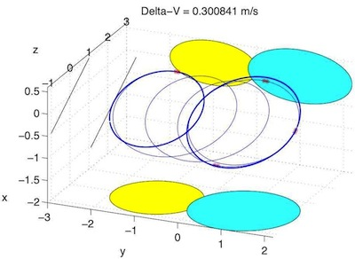
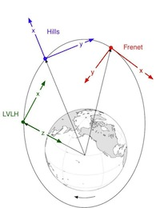

| What's Included |  |
The Formation Flying Module is an add-on module thats add extra functionality to the Spacecraft Control Toolbox.

This software package was developed over the course of two SBIR contracts with NASA Goddard Space Flight Center. The scope of these contracts was to develop a reconfigurable, decentralized framework for autonomous guidance and control in large formations of spacecraft. The outcome of this work was a prototype design for a decentralized formation flying (DFF) control system. The DFF design document is available for download via the link below.
Formation flying is an essential capability for many future missions being planned at NASA, ESA and the DoD. However, it is still a new and developing technology. The Formation Flying Module provides a comprehensive and valuable set of tools for any organization embarking on such a mission. The collection of algorithms, simulations, and design tools offered in the Formation Flying Module is unparalleled in its depth and breadth.
 |
 |
Key Features
- Tools for initializing, simulating, and visualizing spacecraft formations
- Algorithms for decentralized guidance and control
- Full support for both circular and eccentric orbits
- Coordinate transformations between the inertial frame and several relative frames.
- A variety of models for relative dynamics, including:
- Clohessy-Wiltshire (or Hill's) equations
- Lawden's equations
- Gauss' variational equations.
- Formation design utilities, with a powerful GUI.
- Decentralized optimal guidance routines.
- Model Predictive Control (MPC) algorithms for optimal maneuver planning.
- Collision monitoring and avoidance utilities.
- Fully integrated simulation that includes:
- Decentralized guidance and control software
- Inertial frame state integration
- User-defined time-tagged command scripts
- Post-simulation analysis tools.
|  |  |
For more information, visit http://psatellite.com/sct/formation_flying.php